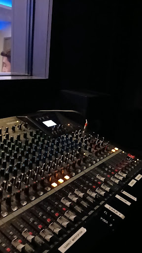
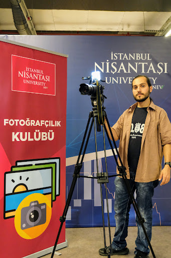
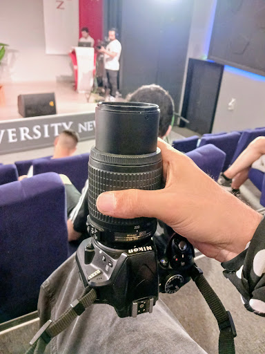
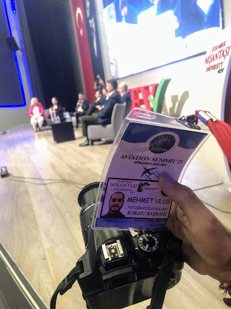
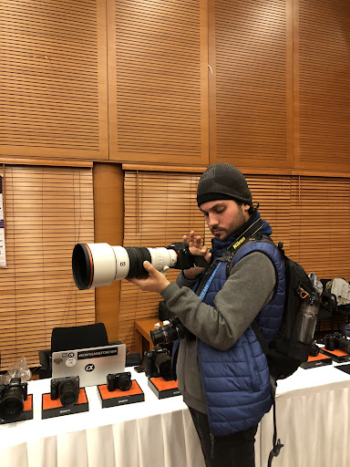
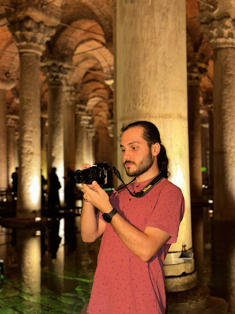
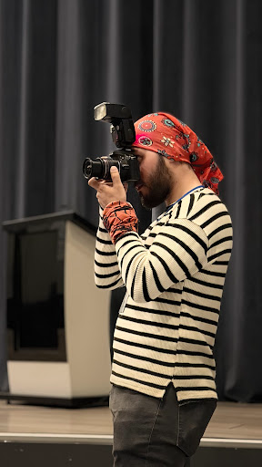
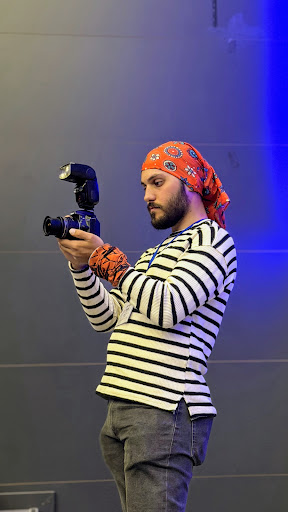
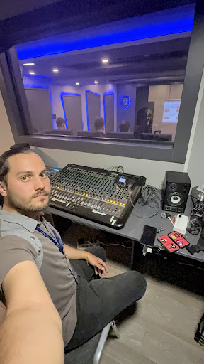

MEHMET ULUS
Bilgisayar ve Elektronik Teknikeri
Profesyonel Fotoğrafçı
Mobil Teknolojileri Teknikeri
Kariyer Hedefi
- ✔️ Mobil teknolojiler, front-end web geliştirme.
- ✔️ Profesyonel medya üretimi (fotoğraf/video) alanlarında disiplinlerarası bir yetkinliğe sahibim.
- ✔️ Ses, ışık ve reji altyapı kurulumlarından yazılım geliştirmeye uzanan süreçte uçtan uca dijital çözümler sunuyorum.
- ✔️ Hedefim; teknik ve görsel birikimimi kurumsal iletişim ve medya alanında uzmanlaşarak yenilikçi projelere dönüştürmektir.
Eğitim Bilgileri
- Mobil Teknolojileri - Nişantaşı Üniversitesi
- 2026 Ağustos'da mezun oldum.
- Bölüm 3.sü oldum ✅
- Öğrenci Kalite Temsilcisi oldum ve görevlerimi yaptım.
- Gençlik ve Spor Bakanlığı Öğrenci Temsilcisi oldum ve görevlerimi yaptım.
- 2024 Ocak'tan itibaren Fotoğrafçılık Kulübü Kurucu Başkanlığı yaptım ve devam ediyorum.
- Elektrik - Nişantaşı Üniversitesi
- 2022-2024 yılları arasında okudum.
- 2024 Ekim'de mezun oldum.
- Bilgisayar Programcılığı - Nişantaşı Üniversitesi
- 2019-2020 eğitim döneminde isteğe bağlı olarak, B1 seviyesine kadar İngilizce Hazırlık eğitimi aldım. ✅
- 2022 Eylül'de mezun oldum.
Bilişim Teknolojileri - Bilgisayar Teknik Servisi - Abdurrahman ve Nermin BİLİMLİ M.T.A.L.
- Diploma Notu: 62.20 / 100
Staj ve Gelişim Süreci
Mobil Teknolojileri Bölümü Stajı ✅
Elektrik Bölümü Stajı ✅
Bilgisayar Programcılığı Stajı ✅
Projeler
Kampüs İçi Videolu Yol Tarifi Projesi (Kağıthane Kampüsü & NEV DENT)
- Öğrenci ve ziyaretçilerin Kağıthane Kampüsü ile NEV DENT Diş Hastanesi içindeki sınıflara, laboratuvarlara ve idari birimlere kolayca ulaşmasını sağlayan mobil öncelikli (mobile-first) web uygulamasının geliştirilmesi.
- Projenin iskeletinde HTML5, tasarımında CSS3 ve işlevsel algoritmalarında (filtreleme, dinamik arama) JavaScript kullanılması.
- Tüm idari birimler ve laboratuvarlar için video çekimlerinin yapılıp sisteme YouTube altyapısı ile entegre edilmesi.
- 🔗 Açık Kaynak Kodlar: GitHub Üzerinden İncele
- 🌐 Canlı Yayın (Deployment): Projeyi Görüntüle
Telsiz Sinyal Haritası Projesi
- Amatör telsizcilik bilgi birikimimi web teknolojileri ile birleştirerek, telsiz sinyal kapsama alanlarını görselleştiren web tabanlı harita uygulamasının kodlanması.
- Harita kütüphaneleri (API) ve ön yüz teknolojileri kullanılarak bölgesel sinyal analizi ve interaktif konum işaretleme özelliklerinin sisteme entegre edilmesi.
- 🔗 Açık Kaynak Kodlar: GitHub Üzerinden İncele
- 🌐 Canlı Yayın (Deployment): Projeyi Görüntüle
P2P Sohbet ve Ağ Analizi Uygulaması
- Tarayıcı tabanlı, eşler arası (P2P) güvenli mesajlaşma ve yerel ağ durumu analizi sunan web aracının kodlanması.
- 🔗 Açık Kaynak Kodlar: GitHub Üzerinden İncele
- 🌐 Canlı Yayın (Deployment): Projeyi Görüntüle
Etkinlik Medya ve Teknik Yönetimi (Nadmex Çalıştayı & Üniversite Etkinlikleri)
- Arama kurtarma kulüpleri ve sivil toplum kuruluşları çalıştaylarında sahne, reji, ışık, ses ve mikser yönetiminin tek başına üstlenilmesi.
- Üniversitenin etkinliklerinde Kurumsal İletişim Ekiplerinin sahada bulunmadığı anlarda inisiyatif alarak profesyonel kamera (Nikon D3300 + D5100) ile fotoğraf ve video çekimlerinin yapılması.
- Kulüp etkinlikleri ve üniversite organizasyonları için görsel materyallerin çekilmesi, düzenlenmesi ve bulut sistemleri üzerinden raporlanması.
Teknik Yetkinlikler ve Beceriler
Teknik Yetkinlikler
Medya & Canlı Yayın Prodüksiyonu
Nikon D3300/D5100, Zhiyun Gimbal, taşınabilir monitör ile canlı focus pulling, HDMI capture ile canlı yayın (streaming) altyapısı kurma, Reji.
Ses & Işık Teknikerliği
Sahne ses ve ışık mikserleri yönetimi, yankı (echo) ve akustik optimizasyonu, mikrofon-hoparlör mesafe ve frekans ayarları.
Donanım & Kriz Yönetimi
Elektronik bakım-onarım, etkinlik esnasında oluşabilecek donanım arızalarına anlık müdahale, Amatör Telsizcilik (TA1TRC), Röle Kurulumu.
İletişim & Organizasyon
Yüksek stresli saha ortamlarında çözüm odaklılık; fiziksel, teknik ve operasyonel krizleri yapıcı ve pozitif bir yaklaşımla çözüme kavuşturma.
Beceriler
Kurs / Sertifika Bilgileri
Bilgisayar Teknik Servis Eğitimi ✅
- Earth Akademi Akreditasyon'u kapsamında, 120 saatlik eğitimi başarıyla tamamlayarak kazanılan sertifika.
Bilgisayar Teknik Servis Eğitimi ✅
- Earth Akademi tarafından verilen programa katılıp, yapılan sınavı başarı ile geçerek kazanılan sertifika.
Bilgisayar Sistem Bakım ve Onarım ✅
- 158 saatlik kursu başarıyla tamamlayarak kazanılan sertifika.
Yazılım Sektöründen Girişimciliğe Eğitimi ✅
- İnovasyon ve Girişimcilik Kulübü tarafından düzenlenen, Kodluyoruz'dan Gizem AŞICI ve Onur Kemal KOÇ ile gerçekleştirilen eğitim sertifikası.
İş Yeri Açma Belgesi (Bilgisayar Sistem Bakım ve Onarım) ✅
- Avrupa Birliğinde geçerli sertifika ve iş yeri açma yetkinlik belgesi.
Portfolyo & Çalışmalarım
Yazılım projelerimin (arayüz kodlamaları) yanı sıra Fotoğrafçılık Kulübü Kurucu Başkanı olarak yapılan çekimler ve teknik altyapı yönetimleri.
🔗 Bireysel Portfolyo Websitesi: npe0ss.webmepage.com/mehmet-ulus











Hobi ve İlgi Alanları
- 🔹 Arızalı elektronik parçaları ve cihazları kurtarmak ve kullanılabilir bir hâle getirmek.
- 🔹 Profesyonel fotoğraf makinesi ile amatör sokak fotoğrafçılığı yapmak.
- 🔹 Profesyonel video kamera ile amatör manzara video çekimleri yapmak.
- 🔹 İGA'da Spotter'lık yapmak.
- 🔹 Uluslararası Amatör Telsizcilik yapmak. Uluslararası geçerliliği olan HAREC belgesi ve Amatör Telsizcilik Lisansına (TA1TRC) sahip olmak.
- 🔹 Güvenlik kamera sistemleri ve benzeri otomasyon sistemleri alanında donanım kurulumu yapmak.